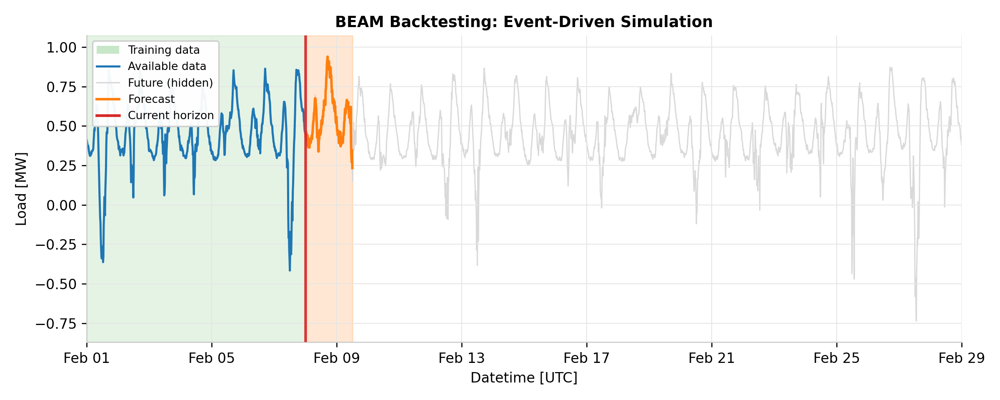

BEAM#
Energy forecasting teams need to compare models fairly. A model that appears superior on one target or time horizon may underperform on another. Without a systematic framework, comparisons become ad-hoc: different evaluation windows, inconsistent data splits, or accidental future data leakage can all invalidate results. BEAM (Backtesting, Evaluation, Analysis, and Metrics) solves this by providing a reproducible, sequential pipeline for model comparison.
This page explains the architecture and design principles of BEAM. For a hands-on walkthrough, see the Backtesting Quickstart.
Why Systematic Benchmarking Matters#
In production energy forecasting, you must answer questions like:
Does a new model outperform the current one across all targets?
How does performance vary by lead time (1-hour ahead vs. day-ahead)?
Are improvements consistent across seasonal windows?
Answering these requires three guarantees:
No future data leakage during backtesting (the model must never see data it would not have in production).
Consistent segmentation of results by horizon, availability time, and evaluation window.
Reproducible analysis that can be re-run or extended without re-executing expensive training.
BEAM encodes these guarantees into its pipeline structure.
Pipeline Overview#
BEAM is organized as three sequential stages, orchestrated by BenchmarkPipeline:
graph LR
TP[TargetProvider] -->|ground truth & predictors| BT[BacktestPipeline]
FF[ForecasterFactory] --> BT
BT -->|TimeSeriesDataset| EV[EvaluationPipeline]
EV -->|EvaluationReport| AN[AnalysisPipeline]
TP -->|ground truth| EV
VP[VisualizationProviders] --> AN
BT --> ST[(BenchmarkStorage)]
EV --> ST
AN --> ST
AN --> AO[AnalysisOutput]
classDef primary fill:#00D9C5,stroke:#1E3A5F,stroke-width:2px,color:#000
classDef secondary fill:#1E3A5F,stroke:#00D9C5,stroke-width:2px,color:#fff
classDef accent fill:#e6f7f5,stroke:#00D9C5,stroke-width:2px,color:#000
class BT,EV,AN primary
class TP,FF,VP secondary
class ST,AO accent
Stage |
Responsibility |
Input |
Output |
|---|---|---|---|
BacktestPipeline |
Simulate production forecasting over historical data |
Ground truth, predictors, BacktestForecasterMixin |
|
EvaluationPipeline |
Segment predictions and compute metrics |
Predictions, ground truth, metric providers |
|
AnalysisPipeline |
Generate visualizations at configurable aggregation levels |
EvaluationReports, VisualizationProviders |
|
These stages are completely decoupled. You can re-run evaluation with different metrics without re-running the backtest, or generate new visualizations without recomputing metrics. This decoupling matters because each stage has a different computational cost and a different rate of change:
Backtesting is expensive. Every backtest requires many forward passes through the model, potentially with periodic retraining. You want to run this once and re-use the predictions.
You may not need backtesting at all. If you ran backtests with external tooling, received shared predictions from a colleague, or already have stored results from a previous run, you can feed them directly into evaluation.
Evaluation and analysis evolve independently. As you refine your metric set or add new visualization providers, you should not have to wait hours re-running expensive model predictions.
Backtesting Stage#
The BacktestPipeline simulates how a
model would have performed in production by stepping through historical data sequentially.
In production, forecasts are generated at regular intervals (e.g., every 6 hours) and
models are retrained periodically (e.g., weekly). The simulation replicates this schedule
so that error distributions match what you would observe in a real deployment.

Preventing future data leakage. The central design challenge in backtesting is
ensuring the model never accesses data from the future. Energy data has different arrival
latencies: weather forecast revisions, late meter readings, and market settlements all
arrive at different times. BEAM uses
RestrictedHorizonVersionedTimeSeries
to track not just data values but when each value first became available, restricting
the model’s view to only data published before the simulated “current time”.
Warning
A BacktestForecasterMixin
is not the same as a Forecaster in openstef-models. It is glue code that adapts any
model to the backtesting interface, receiving only a restricted data view and never
having direct access to the full dataset.
Event-driven simulation.
BacktestEventGenerator
schedules train and predict events according to the configured predict_interval
and train_interval. It merges two streams of events in chronological order, with
train events always executing before predict events at the same timestamp (ensuring the
model is freshly trained before generating predictions). For each event, the pipeline
calls fit() or predict() on the forecaster, always passing a
RestrictedHorizonVersionedTimeSeries
that enforces the temporal boundary.
The output is a TimeSeriesDataset containing all
predictions, each tagged with an available_at timestamp indicating when that
prediction would have been generated in production.
Evaluation Stage#
The EvaluationPipeline is entirely separate from
backtesting. It takes predictions and ground truth, then segments and scores them along
three dimensions. Each dimension answers a different operational question:
available_at: When the prediction was generated (e.g., “day-ahead at 06:00”). A model may perform differently when forecasting in the morning versus the evening because different information is available at each time.
lead_time: The gap between prediction generation and the target timestamp (e.g., 36 hours ahead). Model error typically grows with the forecast horizon, so a “better” model might only outperform at short lead times.
time_windows: Rolling evaluation periods (e.g., 21-day windows). Seasonal effects and model drift mean that aggregate metrics can hide periods of poor performance.
Configurable metrics. Metrics are supplied as provider objects. BEAM includes
providers such as RMAEProvider (Relative Mean Absolute Error) and RCRPSProvider
(Relative Continuous Ranked Probability Score) for probabilistic evaluation. You can
implement custom providers to add domain-specific metrics.
from openstef_beam.evaluation import EvaluationConfig, EvaluationPipeline
from openstef_beam.evaluation.metric_providers import RMAEProvider, RCRPSProvider
eval_pipeline = EvaluationPipeline(
config=EvaluationConfig(),
quantiles=forecaster.quantiles,
window_metric_providers=[RMAEProvider(), RCRPSProvider()],
global_metric_providers=[RMAEProvider(), RCRPSProvider()],
)
The output is an EvaluationReport containing per-subset
metrics that can be inspected programmatically or passed to the analysis stage.
Analysis Stage#
The AnalysisPipeline transforms
evaluation reports into HTML visualizations. It operates at configurable aggregation
levels:
Level |
Description |
|---|---|
NONE |
Single run, single target - individual performance analysis |
TARGET |
Single run, per target - cross-target comparison (e.g., RMAE per target) |
GROUP |
Single run, multiple targets - cross-group comparison (e.g., RMAE per group) |
RUN_AND_NONE |
Multiple runs, single target - compare model variants on one target |
RUN_AND_TARGET |
Multiple runs, per target - compare model variants across targets |
RUN_AND_GROUP |
Multiple runs, multiple targets - full comparison matrix |
Visualization providers (e.g., SummaryTableVisualization) are pluggable. Each
provider receives the relevant subset of evaluation data and produces a self-contained
HTML fragment.
BenchmarkPipeline: The Orchestrator#
BenchmarkPipeline ties everything
together. For each target supplied by a TargetProvider, it executes the three stages
sequentially and persists results via BenchmarkStorage.
Key responsibilities:
Target iteration: Acquires targets (with ground truth, predictors, and metric configuration) from a pluggable
TargetProvider.Forecaster creation: Uses a factory to instantiate a
BacktestForecasterMixinper target.Sequential execution: Runs Backtest, then Evaluation, then Analysis for each target.
Parallel processing: Supports processing multiple targets concurrently for efficiency.
Storage management: Persists predictions, evaluation reports, and analysis outputs through a
BenchmarkStoragebackend (local filesystem, cloud, or in-memory).
Because results are persisted after each stage, you can use
BenchmarkComparisonPipeline
to compare results across multiple benchmark runs without re-executing them.
The pipeline also supports incremental execution: if a target already has stored backtest output, that stage is skipped automatically. This means restarting a failed or interrupted benchmark does not redo work for targets that completed successfully.
Design Principles#
Separation of concerns: Each stage has a single responsibility and a well-defined interface. This makes it possible to swap metric providers, visualization backends, or storage implementations independently.
Temporal integrity: The RestrictedHorizonVersionedTimeSeries wrapper guarantees
that no stage can accidentally introduce future information into model training or
prediction.
Reproducibility: Configurations (BacktestConfig, EvaluationConfig,
AnalysisConfig) are serializable data classes. Storing them alongside results ensures
any benchmark can be reproduced exactly.
Scalability: Parallel target processing and decoupled stages mean that large-scale benchmarks (hundreds of targets, multiple models) remain tractable.
See also
Models for the forecasting models that BEAM evaluates.
Metalearning for how BEAM results inform model selection decisions.
Backtesting Quickstart for a hands-on walkthrough of setting up and running a backtest.
BEAM Package (openstef_beam) for the full openstef-beam API reference.